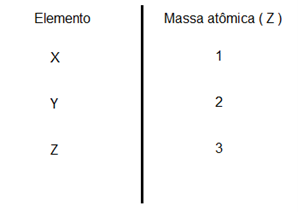
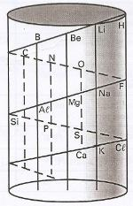
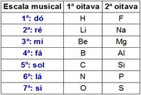
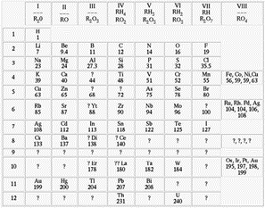

Tabela periódica
O que é tabela periódica?
A tabela periódica é uma representação sistemática dos elementos químicos, sendo
organizados de acordo com suas propriedades tanto físicas quanto químicas. Esse sistema é consistido
em linhas horizontais alcunhada de períodos e colunas verticais denominadas grupos.
Essa tabela é fundamental para a compreensão e previsão dos comportamentos dos elementos
químicos, permitindo que cientistas identifiquem os padrões
dos elementos com base a sua posição na tabela

Grupos: são as colunas verticais que contêm elementos químicas com propriedades semelhantes, sendo
esses organizados de acordo com o número de elétrons na camada de valência (camada mais externa) dos elementos do grupo.
Para identificar um grupo na tabela periódica, apenas ver na tabela periódica qual a
quantidade de elétrons na camada de valência , sendo esse valor o grupo.
Período: Os períodos da tabela periódica são filas horizontais
que representam diferentes níveis de energia ou camadas eletrônicas nos átomos dos elementos.
Para descobrir qual o período, após realizar uma distribuição eletrônica, deve-se contar quantas camadas foram distribuídas.
História da tabela períodica
A primeira tabela periódica surgiu em 1829 por Johann Wolfgang Döbereiner e ficou conhecida como as tríades de Dobereiner, onde
os elementos eram separados em três grupos, sendo a massa do segundo era a média das outras massas.

Já em 1862, a tabela periódica passou por diversas mudanças, como sua organização, que se tornou em ordem crescente
das massas atômicas ao redor de um cilindro, assim ficando conhecida como “Parafuso telúrico de Chancourtois”.

A seguir em 1865 surgiu a “lei das oitavadas de Newlands” era divididas
em colunas verticais com elementos escritos em ordem crescente sobre a massa atômica, com base nas notas musicais.

Até que em 1869, surge a tabela de Mendeleev, eram dispostos em colunas de ordem crescentes da massa atômica.
